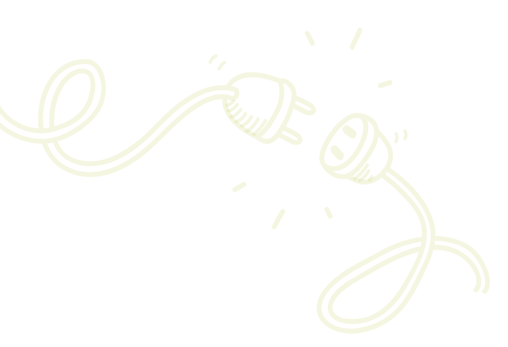

Serverfehler
Sever error
407
Sie müssen von einem Proxyserver authentifiziert werden, bevor der Webserver Ihre Anfrage ausführen kann.
You must be authenticated by a proxy server before the Web server can execute your request.

Sie müssen von einem Proxyserver authentifiziert werden, bevor der Webserver Ihre Anfrage ausführen kann.
You must be authenticated by a proxy server before the Web server can execute your request.